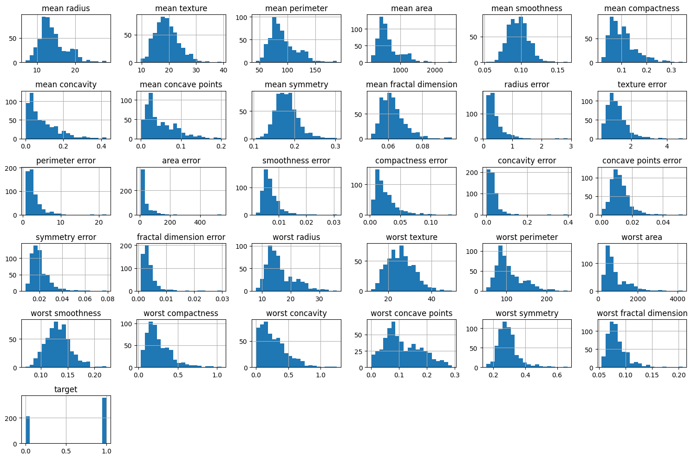

# !pip install numpy pandas matplotlib scikit-learn seabornIntroduction to Classification
What is Classification?
Classification is a type of supervised learning where the goal is to predict categorical class labels. Given input data, a classification model attempts to assign it to one of several predefined classes.
Some examples include: - Email spam detection (spam vs. not spam) - Disease diagnosis (positive vs. negative) - Image recognition (cat, dog, or other)
Workshop Goals
By the end of this workshop, you will be able to: - Understand common classification algorithms - Apply them using Scikit-Learn, NumPy, Pandas, and Matplotlib - Evaluate and optimise models
Topics Covered
- Logistic Regression
- Support Vector Machines (SVM)
- Model Evaluation: Accuracy, Precision, Recall, F1-Score, ROC-AUC
- Neural Networks (MLPClassifier)
- Random Forest Classifier
- Optimisation and Tuning
Required Libraries
We will use the following Python libraries throughout the workshop: - NumPy – numerical operations - Pandas – data manipulation - Scikit-Learn – machine learning models and tools - Matplotlib – data visualisation - Seaborn - data visualisation
Let’s get started! 🚀
Installing Libraries
Uncomment and run the commands below only if packages are not installed.
Check your environment has the necessary libraries installed
import numpy as np
import pandas as pd
import matplotlib.pyplot as plt
from sklearn import datasetsPreview Example Dataset
We use the load_breast_cancer() dataset from Scikit-Learn. It includes 30 numeric features extracted from breast mass images.
from sklearn.datasets import load_breast_cancer
import pandas as pd
data = load_breast_cancer()
X = data.data
y = data.target
df = pd.DataFrame(X, columns=data.feature_names)
df['target'] = y
df.head()| mean radius | mean texture | mean perimeter | mean area | mean smoothness | mean compactness | mean concavity | mean concave points | mean symmetry | mean fractal dimension | ... | worst texture | worst perimeter | worst area | worst smoothness | worst compactness | worst concavity | worst concave points | worst symmetry | worst fractal dimension | target | |
|---|---|---|---|---|---|---|---|---|---|---|---|---|---|---|---|---|---|---|---|---|---|
| 0 | 17.99 | 10.38 | 122.80 | 1001.0 | 0.11840 | 0.27760 | 0.3001 | 0.14710 | 0.2419 | 0.07871 | ... | 17.33 | 184.60 | 2019.0 | 0.1622 | 0.6656 | 0.7119 | 0.2654 | 0.4601 | 0.11890 | 0 |
| 1 | 20.57 | 17.77 | 132.90 | 1326.0 | 0.08474 | 0.07864 | 0.0869 | 0.07017 | 0.1812 | 0.05667 | ... | 23.41 | 158.80 | 1956.0 | 0.1238 | 0.1866 | 0.2416 | 0.1860 | 0.2750 | 0.08902 | 0 |
| 2 | 19.69 | 21.25 | 130.00 | 1203.0 | 0.10960 | 0.15990 | 0.1974 | 0.12790 | 0.2069 | 0.05999 | ... | 25.53 | 152.50 | 1709.0 | 0.1444 | 0.4245 | 0.4504 | 0.2430 | 0.3613 | 0.08758 | 0 |
| 3 | 11.42 | 20.38 | 77.58 | 386.1 | 0.14250 | 0.28390 | 0.2414 | 0.10520 | 0.2597 | 0.09744 | ... | 26.50 | 98.87 | 567.7 | 0.2098 | 0.8663 | 0.6869 | 0.2575 | 0.6638 | 0.17300 | 0 |
| 4 | 20.29 | 14.34 | 135.10 | 1297.0 | 0.10030 | 0.13280 | 0.1980 | 0.10430 | 0.1809 | 0.05883 | ... | 16.67 | 152.20 | 1575.0 | 0.1374 | 0.2050 | 0.4000 | 0.1625 | 0.2364 | 0.07678 | 0 |
5 rows × 31 columns
df.describe()| mean radius | mean texture | mean perimeter | mean area | mean smoothness | mean compactness | mean concavity | mean concave points | mean symmetry | mean fractal dimension | ... | worst texture | worst perimeter | worst area | worst smoothness | worst compactness | worst concavity | worst concave points | worst symmetry | worst fractal dimension | target | |
|---|---|---|---|---|---|---|---|---|---|---|---|---|---|---|---|---|---|---|---|---|---|
| count | 569.000000 | 569.000000 | 569.000000 | 569.000000 | 569.000000 | 569.000000 | 569.000000 | 569.000000 | 569.000000 | 569.000000 | ... | 569.000000 | 569.000000 | 569.000000 | 569.000000 | 569.000000 | 569.000000 | 569.000000 | 569.000000 | 569.000000 | 569.000000 |
| mean | 14.127292 | 19.289649 | 91.969033 | 654.889104 | 0.096360 | 0.104341 | 0.088799 | 0.048919 | 0.181162 | 0.062798 | ... | 25.677223 | 107.261213 | 880.583128 | 0.132369 | 0.254265 | 0.272188 | 0.114606 | 0.290076 | 0.083946 | 0.627417 |
| std | 3.524049 | 4.301036 | 24.298981 | 351.914129 | 0.014064 | 0.052813 | 0.079720 | 0.038803 | 0.027414 | 0.007060 | ... | 6.146258 | 33.602542 | 569.356993 | 0.022832 | 0.157336 | 0.208624 | 0.065732 | 0.061867 | 0.018061 | 0.483918 |
| min | 6.981000 | 9.710000 | 43.790000 | 143.500000 | 0.052630 | 0.019380 | 0.000000 | 0.000000 | 0.106000 | 0.049960 | ... | 12.020000 | 50.410000 | 185.200000 | 0.071170 | 0.027290 | 0.000000 | 0.000000 | 0.156500 | 0.055040 | 0.000000 |
| 25% | 11.700000 | 16.170000 | 75.170000 | 420.300000 | 0.086370 | 0.064920 | 0.029560 | 0.020310 | 0.161900 | 0.057700 | ... | 21.080000 | 84.110000 | 515.300000 | 0.116600 | 0.147200 | 0.114500 | 0.064930 | 0.250400 | 0.071460 | 0.000000 |
| 50% | 13.370000 | 18.840000 | 86.240000 | 551.100000 | 0.095870 | 0.092630 | 0.061540 | 0.033500 | 0.179200 | 0.061540 | ... | 25.410000 | 97.660000 | 686.500000 | 0.131300 | 0.211900 | 0.226700 | 0.099930 | 0.282200 | 0.080040 | 1.000000 |
| 75% | 15.780000 | 21.800000 | 104.100000 | 782.700000 | 0.105300 | 0.130400 | 0.130700 | 0.074000 | 0.195700 | 0.066120 | ... | 29.720000 | 125.400000 | 1084.000000 | 0.146000 | 0.339100 | 0.382900 | 0.161400 | 0.317900 | 0.092080 | 1.000000 |
| max | 28.110000 | 39.280000 | 188.500000 | 2501.000000 | 0.163400 | 0.345400 | 0.426800 | 0.201200 | 0.304000 | 0.097440 | ... | 49.540000 | 251.200000 | 4254.000000 | 0.222600 | 1.058000 | 1.252000 | 0.291000 | 0.663800 | 0.207500 | 1.000000 |
8 rows × 31 columns
df.hist(bins=20, figsize=(15, 10))
plt.tight_layout()
from sklearn.preprocessing import StandardScaler
# Apply StandardScaler
scaler = StandardScaler()
df_scaled = pd.DataFrame(scaler.fit_transform(df), columns=df.columns, index=df.index)
df_scaled.describe()
| mean radius | mean texture | mean perimeter | mean area | mean smoothness | mean compactness | mean concavity | mean concave points | mean symmetry | mean fractal dimension | ... | worst texture | worst perimeter | worst area | worst smoothness | worst compactness | worst concavity | worst concave points | worst symmetry | worst fractal dimension | target | |
|---|---|---|---|---|---|---|---|---|---|---|---|---|---|---|---|---|---|---|---|---|---|
| count | 5.690000e+02 | 5.690000e+02 | 5.690000e+02 | 5.690000e+02 | 5.690000e+02 | 5.690000e+02 | 5.690000e+02 | 5.690000e+02 | 5.690000e+02 | 5.690000e+02 | ... | 5.690000e+02 | 5.690000e+02 | 569.000000 | 5.690000e+02 | 5.690000e+02 | 5.690000e+02 | 5.690000e+02 | 5.690000e+02 | 5.690000e+02 | 5.690000e+02 |
| mean | -1.373633e-16 | 6.868164e-17 | -1.248757e-16 | -2.185325e-16 | -8.366672e-16 | 1.873136e-16 | 4.995028e-17 | -4.995028e-17 | 1.748260e-16 | 4.745277e-16 | ... | 1.248757e-17 | -3.746271e-16 | 0.000000 | -2.372638e-16 | -3.371644e-16 | 7.492542e-17 | 2.247763e-16 | 2.622390e-16 | -5.744282e-16 | -4.995028e-17 |
| std | 1.000880e+00 | 1.000880e+00 | 1.000880e+00 | 1.000880e+00 | 1.000880e+00 | 1.000880e+00 | 1.000880e+00 | 1.000880e+00 | 1.000880e+00 | 1.000880e+00 | ... | 1.000880e+00 | 1.000880e+00 | 1.000880 | 1.000880e+00 | 1.000880e+00 | 1.000880e+00 | 1.000880e+00 | 1.000880e+00 | 1.000880e+00 | 1.000880e+00 |
| min | -2.029648e+00 | -2.229249e+00 | -1.984504e+00 | -1.454443e+00 | -3.112085e+00 | -1.610136e+00 | -1.114873e+00 | -1.261820e+00 | -2.744117e+00 | -1.819865e+00 | ... | -2.223994e+00 | -1.693361e+00 | -1.222423 | -2.682695e+00 | -1.443878e+00 | -1.305831e+00 | -1.745063e+00 | -2.160960e+00 | -1.601839e+00 | -1.297676e+00 |
| 25% | -6.893853e-01 | -7.259631e-01 | -6.919555e-01 | -6.671955e-01 | -7.109628e-01 | -7.470860e-01 | -7.437479e-01 | -7.379438e-01 | -7.032397e-01 | -7.226392e-01 | ... | -7.486293e-01 | -6.895783e-01 | -0.642136 | -6.912304e-01 | -6.810833e-01 | -7.565142e-01 | -7.563999e-01 | -6.418637e-01 | -6.919118e-01 | -1.297676e+00 |
| 50% | -2.150816e-01 | -1.046362e-01 | -2.359800e-01 | -2.951869e-01 | -3.489108e-02 | -2.219405e-01 | -3.422399e-01 | -3.977212e-01 | -7.162650e-02 | -1.782793e-01 | ... | -4.351564e-02 | -2.859802e-01 | -0.341181 | -4.684277e-02 | -2.695009e-01 | -2.182321e-01 | -2.234689e-01 | -1.274095e-01 | -2.164441e-01 | 7.706085e-01 |
| 75% | 4.693926e-01 | 5.841756e-01 | 4.996769e-01 | 3.635073e-01 | 6.361990e-01 | 4.938569e-01 | 5.260619e-01 | 6.469351e-01 | 5.307792e-01 | 4.709834e-01 | ... | 6.583411e-01 | 5.402790e-01 | 0.357589 | 5.975448e-01 | 5.396688e-01 | 5.311411e-01 | 7.125100e-01 | 4.501382e-01 | 4.507624e-01 | 7.706085e-01 |
| max | 3.971288e+00 | 4.651889e+00 | 3.976130e+00 | 5.250529e+00 | 4.770911e+00 | 4.568425e+00 | 4.243589e+00 | 3.927930e+00 | 4.484751e+00 | 4.910919e+00 | ... | 3.885905e+00 | 4.287337e+00 | 5.930172 | 3.955374e+00 | 5.112877e+00 | 4.700669e+00 | 2.685877e+00 | 6.046041e+00 | 6.846856e+00 | 7.706085e-01 |
8 rows × 31 columns